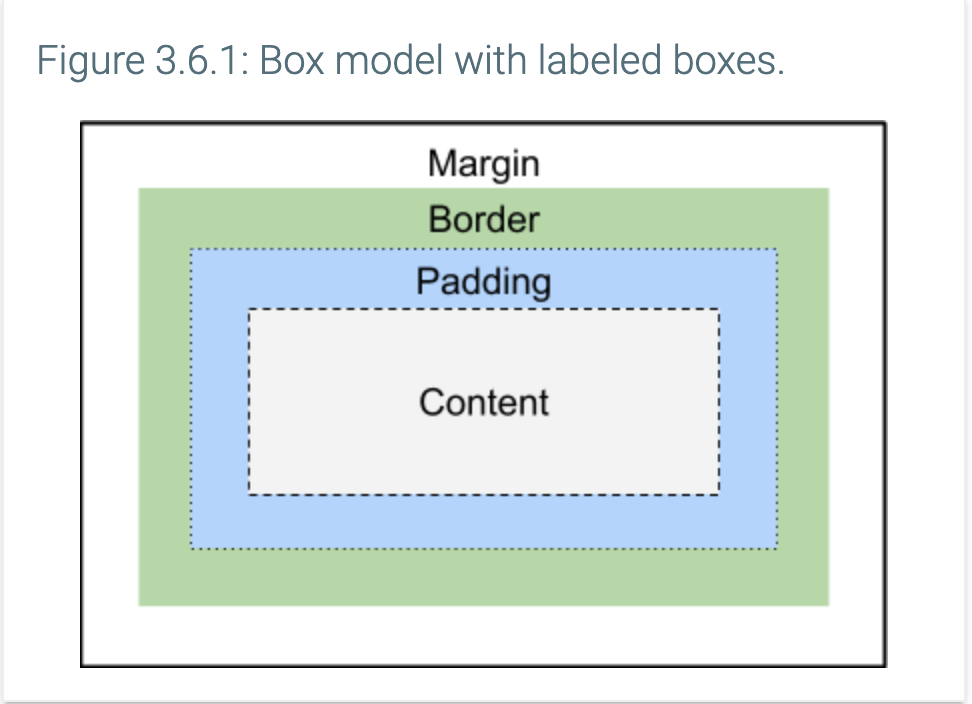

3.6 Box Model
Box model components
HTML elements take up space on the web page. The box model describes the size of each element as a series of nested boxes. The box model is important to understand when considering design and layout.
- Content: The innermost box contains the content of the element, such as text and images.
- Padding: The padding box contains the content box and adds a transparent area around the content.
- Border: The border box contains the padded content and adds an optionally colored area around the padding.
- Margin: The margin box contains all three boxes and adds a transparent area around the border.
